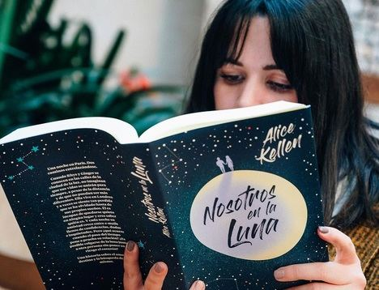
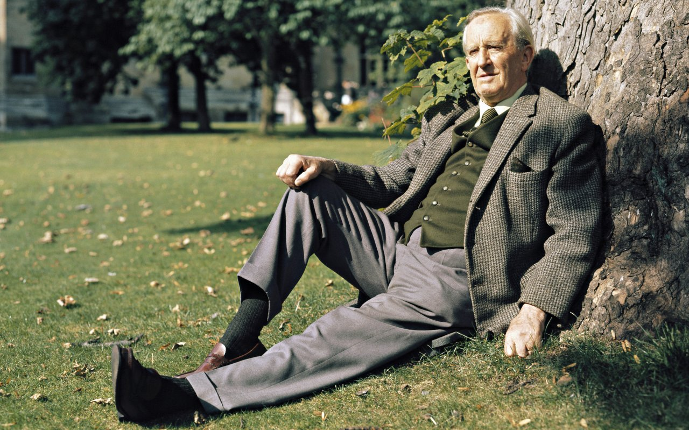

Bienvenidos a la casa del libro juvenil!!!
Alice Kellen nació en Valencia en 1989. Es una joven promesa de las letras españolas que acostumbra a vivir entre los personajes, las escenas y las emociones que plasma en el papel. Es autora de las novelas Sigue lloviendo, El día que dejó de nevar en Alaska, 33 razones para volver a verte, 23 otoños antes de ti, 13 locuras que regalarte, Llévame a cualquier lugar, El chico que dibujaba constelaciones, la bilogía Deja que ocurra: Todo lo que nunca fuimos y Todo lo que somos juntos, Nosotros en la luna y Las alas de Sophie.
 Leer más...John Green nació el 24 de agosto del año 1977 en la ciudad de Indianapolis, Indiana (Estados Unidos). Es hijo de Sydney Green y de Mike Green, quien fue director de un centro de Conservación Natural.En su niñez vivió en Orlando, Florida, en donde sufrió acoso escolar. Las cosas mejoraron para John cuando su familia se trasladó al estado de Alabama, concretamente a Birmingham, y fue internado en la Indian Spings School. Estudió Lengua Inglesa y Estudios Religiosos en la Kenyon College de Ohio. Trabajó como capellán en un hospital pediátrico y como asistente editorial.
Leer más...Anna Todd nació en Ohio en 1989. Ha figurado en la lista de bestsellers del The New York Times como autora de la Serie After, Sisters. Lazos infinitos y, más recientemente, la Serie Stars. La Serie After ha sido publicada en más de treinta y cinco idiomas, y ha sido número uno en varias listas internacionales de bestsellers. Desde entonces, ha escrito ocho novelas más y ha ejercido de guionista y productora en la adaptación cinematográfica de After. En mil pedazos, la secuela de After.
Leer más...John Ronald Reuel Tolkien nácido en Bloemfontein, hoy Sudáfrica; 3 de enero de 1892-Bournemouth, a menudo citado como J. R. R. Tolkien o JRRT, fue un escritor, poeta, filólogo, lingüista y profesor universitario británico, conocido principalmente por ser el autor de las novelas clásicas de fantasía heroica El hobbit, El Silmarillion y El Señor de los Anillos. De 1925 a 1945, Tolkien ocupó la cátedra Rawlinson y Bosworth en la Universidad de Oxford, enseñando anglosajón y, de 1945 a 1959, fue profesor de Lengua y Literatura inglesa en Merton. Era amigo cercano del también escritor C. S. Lewis y ambos eran miembros de un informal grupo de debate literario conocido como los Inklings. Tolkien fue nombrado Comendador de la Orden del Imperio Británico por la reina Isabel II el 28 de marzo de 1972.
 Leer más...